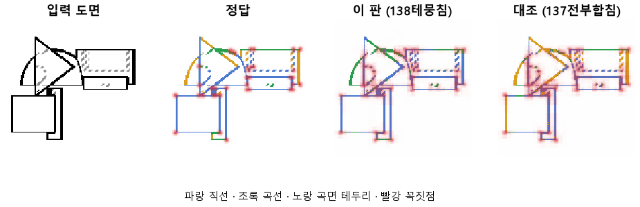

한 줄로
물음: 도면만 봐서는 답이 없는 곡면 테두리를 종류까지 맞히라고 하지 않으면, 직선과 곡선을 둘 다 더 잘 맞힐까?
답: 곡선은 0.76에서 0.84로 올랐다. 하지만 직선은 0.78에서 0.76으로 내렸다. 곡선 옆 직선을 곡선으로 틀리는 비율도 0.24에서 0.39로 늘었다. 기준 7개 중 2개만 넘어서 판정은 실패다.
왜 이 판을 했나
이 모델은 부품 도면의 화소마다 선이 있는지 본다. 선이 있으면 직선·곡선·곡면 테두리·숨은선 중 무엇인지 고른다. 곡면 테두리는 원통 옆면처럼 둥근 면이 꺾여 보이는 선이다. 도면에는 곧게 그려진다. 그래서 한 장만 봐서는 사람도 상자 모서리(직선)인지 원통 옆인지 모른다.
앞 판(137)에서는 CNN 네 층의 특징을 모두 받게 했다. 그러자 곧은 선을 곡면 테두리로 칠한 곳이 새로 생겼다. 우리는 답이 없는 이 문제가 직선과 곡선 사이를 흔든다고 봤다.
바꾼 것 하나
학습할 때 곡면 테두리 화소는 선으로 칠하기만 하면 종류와 상관없이 정답으로 쳤다. 나머지는 137과 같다. 학습 60바퀴, 학습 부품 3,000개, 시험 부품 299개.
결과

「이 판 목표」는 이 판을 하기 전에 적어 둔 예측이다. 「최종 목표」는 판마다 재는 목표다. 같은 값을 다른 선에 대 본다.
| 이 판 (138) | 대조 (137) | 목표 | 넘었나 | |
|---|---|---|---|---|
| 곡선을 곡선으로 (이 판 목표) | 0.84 | 0.76 | 0.80 | ✓ |
| 선이 있는 자리를 찾음 | 1.00 | 1.00 | 0.95 | ✓ |
| 직선을 직선으로 (이 판 목표) | 0.76 | 0.78 | 0.80 | ✗ |
| 곡선에서 3화소 안의 직선을 곡선으로 틀림 | 0.39 | 0.24 | 0.25 아래 | ✗ |
| 곡선을 곡선으로 (최종 목표) | 0.84 | 0.76 | 0.90 | ✗ |
| 직선을 직선으로 (최종 목표) | 0.76 | 0.78 | 0.90 | ✗ |
| 꼭짓점 | 0.52 | 0.51 | 0.75 | ✗ |
꼭짓점은 「찾은 점 중 맞은 비율」과 「정답 점 중 찾은 비율」을 함께 본 점수다. 1이면 완벽하다.
왜 이렇게 나왔나
확인한 것
- 곡선이 오른 만큼 곡선 옆 직선의 실수가 늘었다. 두 판 전인 136(앞 층과 뒤 층만 받음)은 곡선 0.82, 직선 0.69, 실수 0.40이었다. 곡선과 실수는 그 자리로 돌아갔다. 직선만 136보다 높다.
- 모델은 곡면 테두리를 한 번도 고르지 않았다(0.00).
- 선 자리와 꼭짓점은 137과 거의 같다.
짐작 (아직 확인 안 함)
- 애매한 화소를 다시 곡선이라고 부르게 된 것 같다. 137에서 직선 쪽으로 기울었던 것이 반대로 기운 셈이다.
- 기준에는 없지만, 모든 선 화소에서 종류를 맞힌 비율이 0.76에서 0.65로 떨어졌다. 이 계산은 곡면 테두리도 종류를 맞혀야 맞은 것으로 세는 듯하다. 그렇다면 학습에서 봐준 화소가 여기서는 전부 틀린 것으로 잡힌다.
한계
- 시험 부품 299개로 한 번만 돌렸다.
- 같은 학습끼리 0.1 넘게 어긋난 적이 있다(133·134). 그래서 곡선 +0.08, 직선 −0.02, 꼭짓점 +0.01은 모두 흔들림 안쪽일 수 있다. 그보다 큰 변화는 실수가 0.15 늘어난 것 하나다.
- 시험 손실은 45~50바퀴에 가장 낮았다. 60바퀴 끝 값으로 쟀으니 가장 좋을 때의 점수는 아니다.
배운 것과 다음
답 없는 문제를 빼도 직선과 곡선이 같이 오르지는 않았다. 136·137·138은 모두 한쪽을 내주고 다른 쪽을 얻은 모양이다. 곡면 테두리는 이 시소의 주된 원인이 아닌 것 같다. 다만 한 번 돌린 결과라 단정하기는 이르다.
- 곡선 옆 직선을 틀린 자리를 그림으로 모아, 두 선 사이 몇 화소에서 틀리는지 센다.
- 종류 비율을 셀 때 곡면 테두리를 빼고 다시 잰다.
- 같은 설정으로 한 번 더 돌려 흔들림 크기를 잰다.